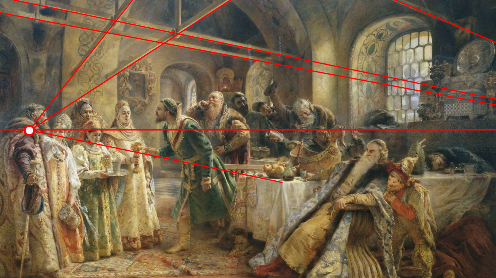

Assignment 3: Ways of Seeing by John Berger

I think the School of Athenes perfectly illustrate people's initial way of seeing: perspective . As you can see, every straitline in this painting either centers to the "vanishing point" or is parralell to the horizon. Perspective views, espectially one-point perspective, dominate our art history because this is how human eyes perceive the world.

I think the School of Athenes perfectly illustrate people's initial way of seeing: perspective . As you can see, every straitline
in this painting either centers to the "vanishing point" or is parralell to the horizon. Perspective views, espectially one-point perspective,
dominate our art history because this is how human eyes perceive the world.
But the game was changed completely when photograph and video recording came out. Now, size and position can be changed. The images are able
to disseminate much faster. The environment of seeing art has been changed from some museum halls to homes. The uniqueness of art is destroyed
by the technique of massive replication. The value of a genuine Leonardo painting is merely its price, where actually erveyone can see it at
anywhere. The meaning of paintains can be changed easily. Videos can be edited and the background music can be changed.
In essense, people's ways of seeing is completely different.